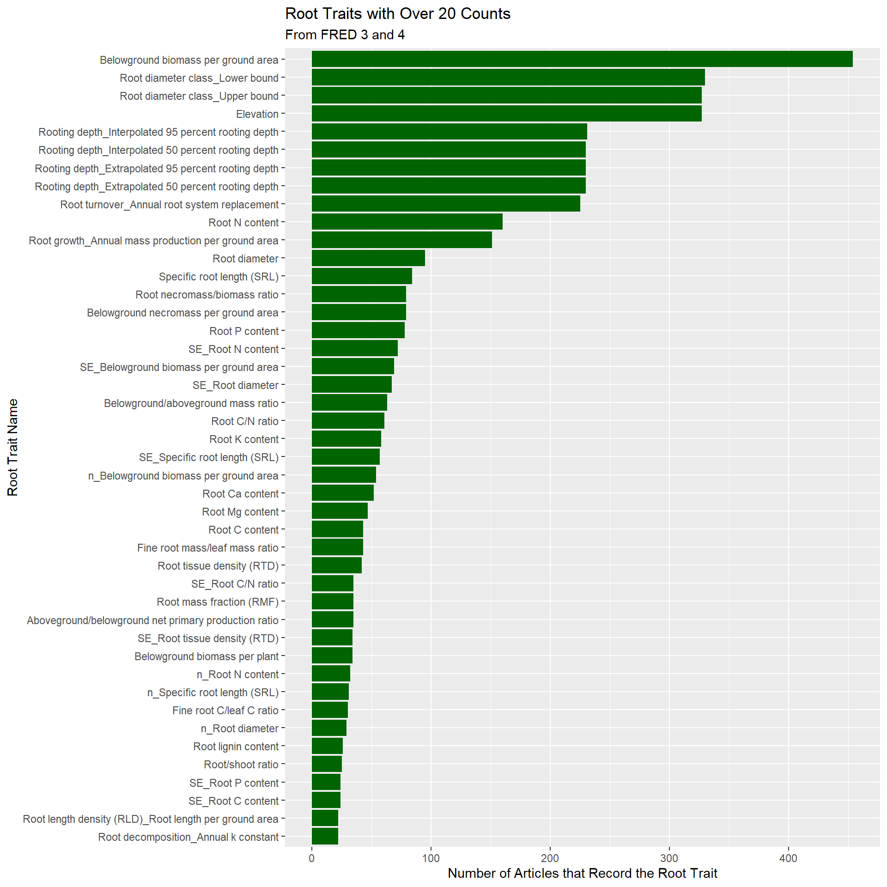

# Importing data sets
FRED3 <- read.csv("FRED3.csv")
FRED4 <- read.csv("FRED4.csv")Tailored Project - Analysis on FRED 3.0 and 4.0
Introduction
The Fine Root Ecology Database (FRED) contains a collection of research articles that have root trait information. Root traits are variables such as root biomass and specific root length. Documenting these variables can be useful for future research that aims to examine relationships between root traits or help understand belowground ecology.
Note
For more information, please refer to the official FRED website: https://roots.ornl.gov/.
As of now (2025), the latest version, FRED 3.0, has been published and is available to use. Over the past year, FRED 4.0 has been developed by expanding the scope of articles that can be added to the existing FRED 3.0. Articles were initially assessed for root trait information. If they contained root trait information, we extracted data from graphs and entered them into the FRED 4.0 spreadsheet template.
This project seeks to examine the spatial distribution of article sites included in FRED 3.0 and FRED 4.0 through a leaflet map (interactive map) and explore trends in counts of root traits recorded and measured.1
Data Cleaning & Wrangling
List of libraries used
library(mosaic)
library(ggformula)
library(tidyverse)
library(stringr)
library(janitor)
library(leaflet)
library(leaflet.extras)
library(leafem)
library(sf)
library(geosphere)
library(plotly)
library(flexdashboard)
The first step is to read in the CSV file. The spreadsheet for FRED 3.0 is obtained from the official FRED website and renamed to FRED3.csv2; the file for FRED 4.0 is not yet publicly released.
Note
The files will be available through a link posted in the README.md file on GitHub
After importing the datasets, we clean and wrangle the dataset so that it can be used to generate graphs and plots.
There will be three graphs:
The first plot will be a leaflet that shows a map of the locations where the articles in FRED 3.0 and 4.0 collected root trait data. We want markers on the leaflet to show article locations, and when clicked, we want to display whether the article belongs to FRED 3.0 or 4.0, along with the number of root traits it recorded.
The second plot will be a graph showing the number of unique root traits recorded by all articles in FRED 3.0 and 4.0 across the years.
The third graph will be a bar chart showing the most commonly recorded root traits in both FRED 3.0 and 4.0.
The overall process of cleaning the data consisted of first removing the irrelevant rows near the top of the original FRED 3.0 or 4.0 spreadsheet and replacing the header that had uninformative names (such as F00001) with variable names (originally row #1 after the header) and keeping the row that informed us of the type of data (e.g., Meta_Data, Root_Traits, etc.) that was in each column (originally row #5).
Then, we will obtain columns that correspond to root traits by using the row that informs the type of data in that column, and keep root trait columns along with the columns that correspond to article name, latitude, and longitude.
After narrowing down our dataset to include root trait columns and site information, we no longer needed the “type” row, so we excluded that row. To account for possible empty columns, we only included root traits with at least one non-empty entry in that column.
FRED 3.0 Data Cleaning
# FRED 3 data cleaning
# make first row the header
FRED3 <- FRED3 |> row_to_names(1)
# remove irrelevant rows
FRED3 <- FRED3 |>
filter(Name == "1" | Name == "Type")
# pulling the first row as a vector
var_type <- unlist(FRED3[1,], use.names = FALSE)
# get vector of indices that correspond to root traits
indices <- rep(0, length(var_type))
# looping through entire row of variable types
for (i in 1:length(var_type)) {
# if entry is empty
if(is.na(var_type[i])){
# skip that entry
i = i + 1
}
# if the variable type is root trait
else if (var_type[i] == "Root_Traits") {
# add the index to our vector
indices[i] <- i
}
}
# dropping "0" values from indices vector
indices <- indices[indices != 0]
# selecting columns with article, lat, long, and root traits
FRED3_cleaned <- FRED3 |>
# create short variable name for article
rename(Article = "Abbreviated article citation") |>
# select article, coordinates, and root trait columns
select(Article, Latitude_Main, Longitude_Main, indices)
# removing the row that was "type"
FRED3_cleaned <- FRED3_cleaned[3:nrow(FRED3_cleaned),]
# keeping only non-empty columns
FRED3_cleaned <- remove_empty(FRED3_cleaned, which="cols")
# need to address entries with whitespace that aren't registered as empty/NA
# create vector with the length of the dataset
nonempty_col <- rep(-99, length(FRED3_cleaned))
# check each column of the dataset
for (i in 1:ncol(FRED3_cleaned)){
# check all entries in the column
# make sure that there is at least 1 non-empty value
# (that the count of non-empty entries in a col is not equal to 0)
if(sum((FRED3_cleaned[,i]) != "") != 0){
# add index to vector if column is not empty
nonempty_col[i] <- i
}
}
# only keep non-empty columns
nonempty_col <- nonempty_col[nonempty_col != -99]After the preliminary data cleaning, we can proceed further to modify the dataset so that the data frame is in the proper format for use in leaflets and graphs.
# pivot table with columns:
# article name, lat, long, trait type, root trait value
FRED3pivot <- FRED3_cleaned |>
# select non-empty columns
select(nonempty_col) |>
# keep columns article, lat, long and only pivot root trait columns (#4-738)
pivot_longer(cols = 4:738,
names_to = "Trait",
values_to = "Value",
values_drop_na = TRUE) |>
# turn all empty cells into NAs
mutate_all(na_if, "") |>
# remove NAs
drop_na()
# record the count of root traits by that article
FRED3_traitcount <- FRED3pivot |>
# select relevant variables
select(Article, Trait, Value) |>
# count the number of unique root traits each article records
group_by(Article) |>
summarize(Traitcount = length(unique(Trait)))
# for leaflet
# create data frame with coordinates and trait count for each article
FRED3sites <- FRED3_cleaned |>
# select relevant variables
select(Article, Latitude_Main, Longitude_Main) |>
# join with the trait count table, using article name
inner_join(FRED3_traitcount, by = "Article") |>
# drop duplicate rows
distinct() |>
# leave out unspecified coordinates
filter(Latitude_Main != "unspecified") |>
# turn coordinates into numeric
mutate(Latitude_Main = as.numeric(Latitude_Main)) |>
mutate(Longitude_Main = as.numeric(Longitude_Main)) |>
# create year column by extracting from article
# by specifying the regular expression for year (4 integers in sequence)
mutate(Year = str_extract(Article, "[0-9]{4}")) |>
# drop NAs
drop_na() |>
# arrange entries by year (oldest to newest)
arrange(Year)FRED 4.0 Data Cleaning
We will apply a similar process to clean FRED 4.
# FRED 4 data cleaning
# making first row replace the header
FRED4 <- FRED4 |> row_to_names(1)
# remove irrelevant rows
FRED4 <- FRED4 |>
filter(`Data_Raw or unpublished` == "main article" | Name == "Type")
# pulling the first row as a vector
var_type <- unlist(FRED4[1,], use.names = FALSE)
# get vector of indices that correspond to root traits
indices <- rep(0, length(var_type))
# looping through entire row of variable types
for (i in 1:length(var_type)) {
# if entry is empty
if(is.na(var_type[i])){
# skip that entry
i = i + 1
}
# if the variable type is root trait
else if (var_type[i] == "Root_Traits") {
# add the index to our vector
indices[i] <- i
}
}
# dropping "0" values from indices vector
indices <- indices[indices != 0]
# selecting columns with article, lat, long, and root traits
FRED4_cleaned <- FRED4 |>
# create short variable name for article
rename(Article = "Abbreviated article citation") |>
# select article, coordinates, and root trait columns
select(Article, Latitude_Main, Longitude_Main, indices)
# removing the row that represented "type"
FRED4_cleaned <- FRED4_cleaned[3:nrow(FRED4_cleaned),]
# keeping only non-empty columns
FRED4_cleaned <- remove_empty(FRED4_cleaned, which="cols")
# need to address entries with whitespace that aren't registered as empty/ NA
# create vector with the length of dataset
nonempty_col <- rep(-99, length(FRED4_cleaned))
# check each column of the dataset
for (i in 1:ncol(FRED4_cleaned)){
# check all entries in the column
# make sure that there is at least 1 non-empty value
# (that the count of non-empty entries in a col is not equal to 0)
if(sum((FRED4_cleaned[,i]) != "") != 0){
# add index to vector if column is not empty
nonempty_col[i] <- i
}
}
# only keep non-empty columns
nonempty_col <- nonempty_col[nonempty_col != -99]
# pivot table with columns:
# article name, lat, long, trait type, root trait value
FRED4pivot <- FRED4_cleaned |>
#select non-empty
select(nonempty_col) |>
# keep article, lat, long alone and only pivot other variables
pivot_longer(cols = 4:33,
names_to = "Trait",
values_to = "Value",
values_drop_na = TRUE) |>
# if empty cell, replace with NA
mutate_all(na_if, "") |>
# remove NAs
drop_na()
# record the count of root traits by that article
FRED4_traitcount <- FRED4pivot |>
# select relevant variables
select(Article, Trait, Value) |>
# count the number of unique root traits each article records
group_by(Article) |>
summarize(Traitcount = length(unique(Trait)))
# for leaflet
# create data set with coordinates and trait count for each article
FRED4sites <- FRED4_cleaned |>
# select relevant variables
select(Article, Latitude_Main, Longitude_Main) |>
# join with the table with trait count
inner_join(FRED4_traitcount, by = "Article") |>
# drop duplicate rows, keeping only one entry per article
distinct() |>
# leave out unspecified coordinates
filter(Latitude_Main != "unspecified") |>
# turn coordinates into numeric
mutate(Latitude_Main = as.numeric(Latitude_Main)) |>
mutate(Longitude_Main = as.numeric(Longitude_Main)) |>
# create year column by extracting from article
# by specifying the regular expression for year (4 integers in sequence)
mutate(Year = str_extract(Article, "[0-9]{4}")) |>
# arrange entries by year (oldest to newest)
arrange(Year)Combining FRED 3.0 and 4.0
Then, we can combine the FRED 3 and 4 datasets to get the number of root traits recorded by all articles in each year. We will use this dataset to create a time series graph showing how the counts of root traits change over the years. Since articles could record the same root traits, we will account for the duplicates of root traits that articles record to prevent overcounting (what will be graphed is the number of unique root traits recorded in each year).
# data set of number of root traits recorded in a year, by all articles
# combine FRED 3 and 4 pivots
FRED_countsbyyear <- rbind(FRED3pivot, FRED4pivot) |>
# create year column
mutate(Year = str_extract(Article, "[0-9]{4}")) |>
arrange(Year) |>
group_by(Year) |>
# count the number of unique traits recorded by articles in a year
summarize(Count = length(unique(Trait)))We also create a separate combined dataset to see the most common root traits recorded by articles in FRED 3.0 and 4.0, which we can use to create a bar graph.
# combine FRED 3 and 4 to see how many counts per root trait
FRED_countsbytype <- rbind(FRED3pivot, FRED4pivot) |>
# drop non-numeric value
mutate(as.numeric(Value)) |>
drop_na() |>
group_by(Article) |>
# list unique root traits for each article
summarize(Type = unique(Trait)) |>
# add year column
mutate(Year = str_extract(Article, "[0-9]{4}")) |>
group_by(Type) |>
# count number of times the root trait is recorded
summarize(Count = n()) |>
# only include root traits with over 20 counts
filter(Count > 20) |>
# order from most to least recorded
arrange(desc(Count))Results
Leaflet
Using the cleaned data sets–“FRED3sites” and “FRED4sites”–we can create a leaflet of sites that were included in FRED 3 and FRED 4.
On the leaflet, there is an option on the upper left corner to toggle off/on to see articles in either of the FRED 3 and 4 datasets. You can also switch between map types and click on the markers to see the database the site is recorded in, the article name, and the number of root traits that the article has and is recorded in that database.
Through the leaflet, it can be seen that all of the FRED 4.0 article sites were in the Northern Hemisphere, whereas FRED 3.0 had articles in both hemispheres.
# leaflet of sites and number of root traits recorded by the article
# reading shape file
map <- read_sf("geoBoundariesCGAZ_ADM0.shp")
# creating leaflet
articlemap <- leaflet(map) |>
# add default layer of basic map outlines
addTiles(group = "OSM (default)") |>
# add satellite layer
addProviderTiles(
providers$Esri.WorldImagery,
group = "World Imagery (satellite)"
) |>
# allow to switch between layers
addLayersControl(
# map options
baseGroups = c(
"OSM (default)",
"World Imagery (satellite)"
),
# allow to choose to show markets for either FRED3 or FRED4
overlayGroups = c("FRED3", "FRED4"),
options = layersControlOptions(collapsed = FALSE),
position= "topleft"
) |>
# markers to indicate sites
addMarkers(
data = FRED4sites,
lat =~ Latitude_Main,
lng =~ Longitude_Main,
group = "FRED4",
# when clicked, show article name and trait count
popup = ~paste0("<b> FRED 4.0 </b></br>", Article,
"</br> Root Trait Count: ", Traitcount),
# group markers into clusters
clusterOptions = markerClusterOptions()
) |>
addMarkers(
data = FRED3sites,
lat =~ Latitude_Main,
lng =~ Longitude_Main,
group = "FRED3",
# when clicked, show article name and trait count
popup = ~paste0("<b> FRED 3.0 </b></br>", Article,
"</br> Root Trait Count: ", Traitcount),
# group markers into clusters
clusterOptions = markerClusterOptions()
)
articlemapTime Series Graph
The interactive plot below shows the number of unique root traits studied by all articles in a year (adjusted for duplicates when we wrangled the data).
Before the 1980s, there were not nearly as many root traits recorded, but the number of recorded root traits started to increase and peaked at a count of 211 in 2015. Then, we see a notable drop in articles afterwards. This does not necessarily mean that there were fewer articles on root traits or that articles started focusing on a select number of root traits, but rather that the databases might not provide extensive coverage of recent articles. There could be potentially be another version of FRED published later that includes articles up to the present day.
# graph of root trait count by year
# create plotly figure with x variable as year
timegraph <- plot_ly(FRED_countsbyyear, x = ~Year)
# add y variable (count of root traits)
timegraph <- timegraph |> add_lines(y = ~Count)
# specify layout of plotly
timegraph <- timegraph |> layout(
# add title to figure
title = "Number of Root Traits Studied by All Articles
(from FRED 3.0 & 4.0) in a Year",
# specify x axis
xaxis = list(
# add range slider to graph
rangeslider = list(type = "date")),
# label y axis
yaxis = list(title = "Root Trait Counts"))
# show plotly figure
timegraphBar graph of most commonly recorded root traits
To see the most recorded root traits in the combined FRED 3 and 4 datasets, we can use a bar graph ordered by counts.
Only root traits over 20 counts were included since the bars get very small, and the texts get harder to see if you include rarer root traits. This suggests that many other root traits are recorded. However, the majority of root traits recorded are in a small number of articles, and a select number of the most popular root traits (e.g., belowground biomass per ground area and root diameter) are recorded in hundreds of articles.
# bar graph of root traits with at least 20 counts
# crate bar graph, ordered by counts
ggplot(data = FRED_countsbytype, aes(x = Count,
y = reorder(Type, Count))) +
geom_col(fill = "darkgreen") +
labs(title = "Root Traits with Over 20 Counts",
subtitle = "From FRED 3 and 4",
x = "Number of Articles that Record the Root Trait",
y = "Root Trait Name")
Discussions
The leaflets and graphs offer a snapshot of the FRED 3.0 and FRED 4.0 databases. To explore further, we can create an interactive dashboard with ShinyApp that integrates the leaflet with the graphs.
We can add an additional feature to the leaflet to let users see the site’s specific coordinates and state/country, as well as names of root traits measured by that article (possibly a pop-up to the side) when they click on the markers.
We can also modify the bar graph to let users choose the number of root traits (instead of limiting it to 20) displayed on the bar graph by a slider or numeric input. We can also let users specify the root traits they want to compare on the bar graph through a text input with dropdown options.
Additionally, we can also look into potential trends in the type of root traits studied as years progress, possibly through a mosaic or area plot to show a comparison of root traits recorded over the years.
Currently, summary statistics (standard deviation/min/max) of the same root trait are counted as different root traits. A possible step we could take is to clean the data set to consider summary statistics of the same variable as a single root trait instead of treating them separately.
From the time graph, it can be seen that the number of root traits recorded in FRED 3.0 and 4.0 was considerably less before 1990 and after 2015. A search for articles before 1990 and up to a day near the present could be performed to expand the coverage of articles.
References
Iversen CM, McCormack ML, Baer JK, Powell AS, Chen W, Collins C, Fan Y, Fanin N, Freschet GT, Guo D, Hogan JA, Kou L, Laughlin DC, Lavely E, Liese R, Lin D, Meier IC, Montagnoli A, Roumet C, See CR, Soper F, Terzaghi M, Valverde-Barrantes OJ, Wang C, Wright SJ, Wurzburger N, Zadworny M. (2021) Fine-Root Ecology Database (FRED): A Global Collection of Root Trait Data with Coincident Site, Vegetation, Edaphic, and Climatic Data, Version 3. Oak Ridge National Laboratory, TES SFA, U.S. Department of Energy, Oak Ridge, Tennessee, U.S.A. Access on-line at: https://doi.org/10.25581/ornlsfa.014/1459186.
Runfola, D. et al. (2020) geoBoundaries: A global database of political administrative boundaries. PLoS ONE 15(4): e0231866. https://doi.org/10.1371/journal.pone.0231866
Practicing Academic Integrity
If you worked with others or used resources outside of provided course material, such as Generative AI (anything besides our textbook, course materials in the repo, labs, R help menu) to help complete this assignment, please acknowledge them below using a bulleted list. Remember that according to our class framework, if you engage with Generative AI tools, the tool and date of use must be listed here, and then a complete record of the chat history must be appended to the assignment.
I acknowledge the following individuals with whom I worked on this assignment:
Name(s) and how they assisted you
- Casey (SDS fellow) - extracting second row as vector to use as indices to refer to the columns with root traits
- Chelsea (SDS fellow)
- getting indices in the vector with non-zero values and getting non-empty columns
- help with checking to see if each column is empty
I used the following sources to help complete this assignment:
Source(s) and where used in your submission
- To get a row of the dataframe without the header: https://stackoverflow.com/questions/64082731/return-all-values-from-row-without-column-names-in-r
- Removing empty rows: https://www.rdocumentation.org/packages/janitor/versions/2.2.1/topics/remove_empty
- Deleting rows in a data frame: https://stackoverflow.com/questions/12328056/how-do-i-delete-rows-in-a-data-frame
- Assigning first row to be header: https://stackoverflow.com/questions/20956119/assign-headers-based-on-existing-row-in-dataframe-in-r
- Adding rows of 2 data frames together: https://www.datacamp.com/doc/r/merging
- Extracting year from column: https://stackoverflow.com/questions/67584786/how-to-extract-numbers-from-a-column-in-a-data-frame-and-add-them-in-a-new-colum
- Extracting numbers: https://www.rdocumentation.org/packages/stringr/versions/1.5.1/topics/str_extract
- Shape file: https://www.geoboundaries.org/globalDownloads.html
- Leaflet: https://bookdown.org/nicohahn/making_maps_with_r5/docs/leaflet.html
- Leaflet: https://rstudio.github.io/leaflet/articles/showhide.html
- Interactive time series graph: #https://plotly.com/r/range-slider/
- Footnotes: https://quarto.org/docs/authoring/markdown-basics.html#fn3